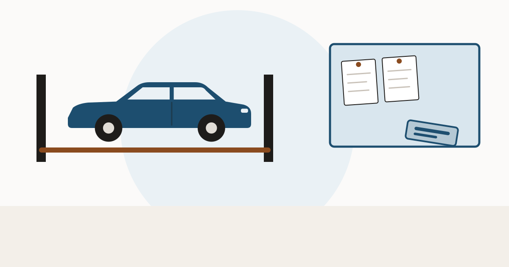

Buying a used car in Massachusetts: REPR, PART and the cause code

Massachusetts does something useful that most states do not: it records why a car was written off, in a code on the title. If you can read the two brands, you learn more from a Massachusetts title than from most.
Two brands, not one
A Massachusetts salvage title carries a primary brand and a secondary brand (Mass.gov):
| Brand | Values | Meaning |
|---|---|---|
| Primary | REPR / PART | Repairable — can be restored to operating condition. Parts-only — can never be registered in Massachusetts. The insurer decides which. |
| Secondary | COLL, FIRE, FLOO, SALT, THEF, VAND, OTHR | The cause: collision, fire, flood, flood/salt, theft, vandalism, other. |
SALT is the one outsiders miss. A coastal state separates ordinary flood from salt-water flood, because salt water does a different and worse job on wiring and structure. If you see it, read flood-damaged cars before going further.
A Massachusetts brand follows the car. A title history across states shows whether it survived a move.
Run a VIN check at VinCheckUp Advertising disclosure: the link above is an affiliate link. If you buy a report through it, this site may earn a commission at no extra cost to you. It does not change what is written on this page.No percentage, and an age cut-off
Massachusetts does not publish a percentage-of-value threshold. A vehicle is a total loss salvage motor vehicle if it was stolen and not recovered, or wrecked, destroyed or damaged to the point that the owner or insurer considers it uneconomical to repair.
There is, however, an exemption that changes what a clean Massachusetts title proves: passenger vehicles that were ten or more years old at the time of loss are outside the scheme, along with trailers and implements of husbandry. On an older car, the absence of a brand may mean the rules never applied, not that nothing happened. The physical inspection carries the weight instead.
The inspection, and why out-of-state papers don't help
A vehicle on a repairable salvage title cannot be registered until it has passed the required salvage inspection. Massachusetts does not honour another state's inspection unless a prior agreement exists — its guidance is that all salvage-titled vehicles must be inspected in Massachusetts if they are to be registered there.
If you are buying a rebuilt car from out of state and intend to register it in Massachusetts, budget for that inspection and confirm the car can pass it before you pay. See buying a used car in another state.
What to do with a Massachusetts car
- Read both brands. The cause code is the part that tells you what to inspect.
- If the primary brand is PART, stop — it cannot be registered there.
- Check the car's age at the date of loss against the ten-year exemption.
- For an out-of-state salvage car, confirm the Massachusetts inspection before committing.
- Pull the title history. See title brands and title washing, and whether a rebuilt car is worth it.
Check whether a salvage record exists in any state before you rely on a clean title.
Run a VIN check at VinCheckUp Advertising disclosure: the link above is an affiliate link. If you buy a report through it, this site may earn a commission at no extra cost to you. It does not change what is written on this page.